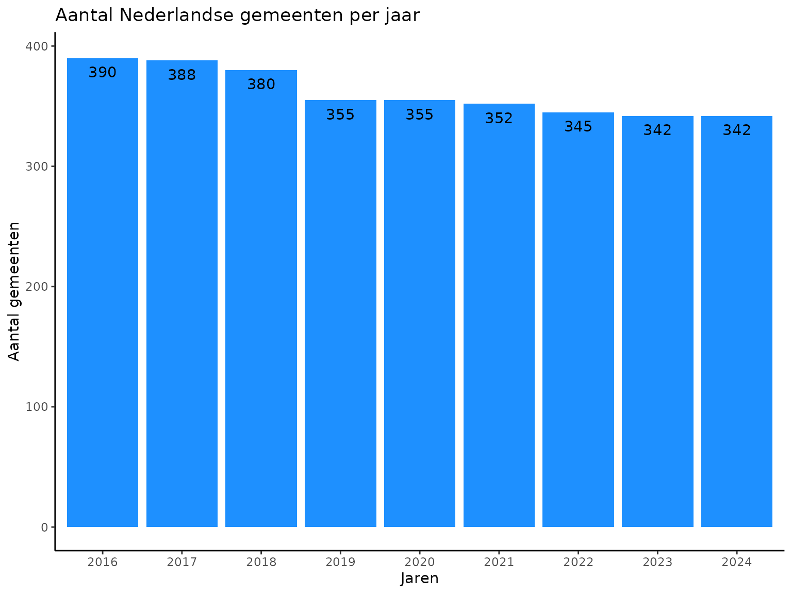
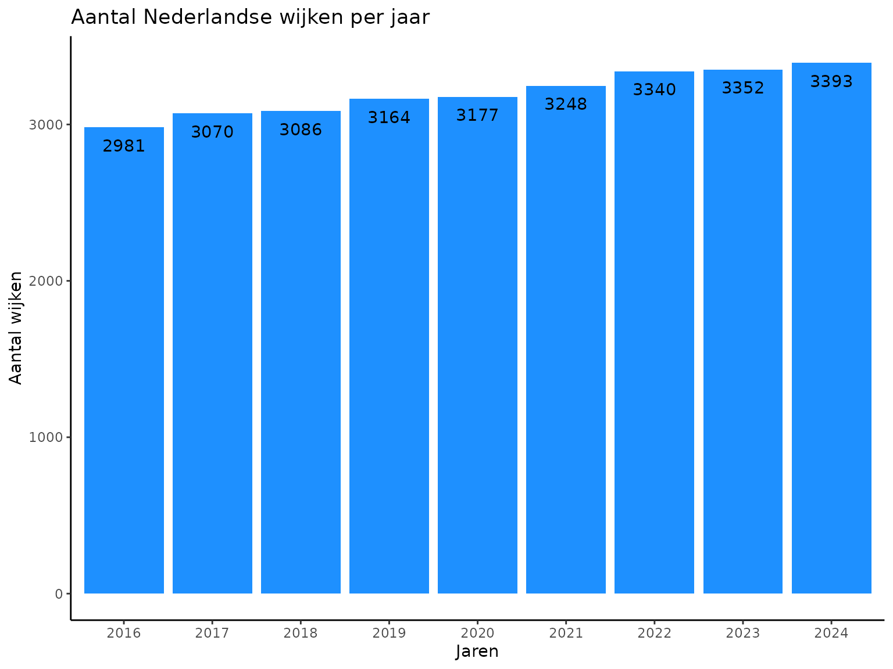
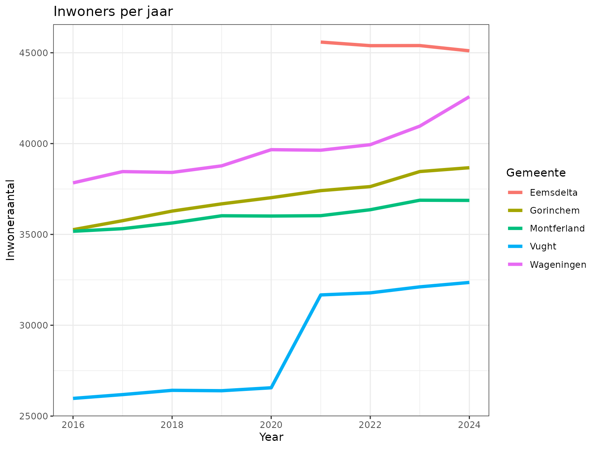
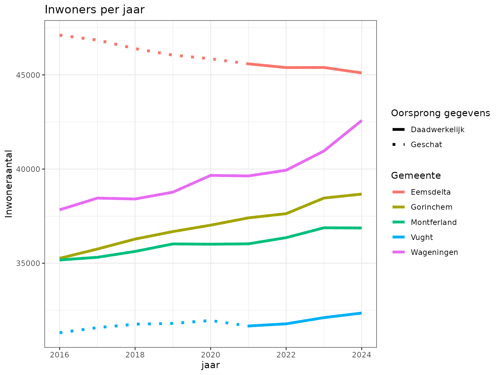

Grenswijzigen
Hans Weda
grenswijzigen.RmdIntroductie
Het grondgebied van Nederland kan op diverse manieren worden opgedeeld. De opdeling waar het in deze repository over gaat is de opsplitsing in gemeenten, wijken en buurten. Daarbij geldt dat buurten optellen tot wijken en wijken optellen tot gemeenten.
Deze indeling ligt niet vast. Het aantal gemeenten neemt de laatste jaren af door fusies. Een grotere gemeente kan taken die worden toegewezen aan gemeenten gemakkelijker oppakken. Het aantal wijken neemt geleidelijk aan toe. Een gemeente kan zelf bepalen hoe zij hun grondgebied willen opdelen in wijken en buurten. Wellicht doordat het aantal gemeenten af neemt, is er behoefte een gemeente op te delen in meer wijken.
Door deze ontwikkelingen wijzigen de grenzen van gemeenten en wijken regelmatig . Dat heeft consequenties als men de huidige wijkkenmerken wil vergelijken met het verleden. Immers, de huidige wijk bestond mogelijk nog niet in voorgaande jaren. Daarmee is het lastig om trends in de ontwikkelingen in wijkkenmerken scherp te ontwaren. Bij wijkkenmerken kan men bijvoorbeeld denken aan het aandeel 65-plussers, de gemiddelde huishoudgrootte of de gemiddelde huizenprijs in een wijk.
Het package Grenswijzigen helpt om te gaan met deze
problematiek.
Achtergrond
Bij het CBS is veel data te vinden. Voor dit onderwerp zijn we met name geinteresseerd in cijfers rondom wijken en gemeenten. Binnen het CBS betreft het bijvoorbeeld onderstaande tabellen:
library(cbsodataR)
df.catalog <- cbsodataR::cbs_get_datasets(catalog="CBS")
df.catalog <- df.catalog[
grepl("Kerncijfers wijken en buurten \\d{4}$", df.catalog$Title),
c("Identifier", "Title")
]
df.catalog$Jaar <- as.numeric(
regmatches(df.catalog$Title, regexpr("\\d{4}", df.catalog$Title))
)
df.catalog
#> Identifier Title Jaar
#> 1080 85984NED Kerncijfers wijken en buurten 2024 2024
#> 1081 85618NED Kerncijfers wijken en buurten 2023 2023
#> 1082 85318NED Kerncijfers wijken en buurten 2022 2022
#> 1083 85039NED Kerncijfers wijken en buurten 2021 2021
#> 1084 84799NED Kerncijfers wijken en buurten 2020 2020
#> 1085 84583NED Kerncijfers wijken en buurten 2019 2019
#> 1086 84286NED Kerncijfers wijken en buurten 2018 2018
#> 3843 83765NED Kerncijfers wijken en buurten 2017 2017
#> 3844 83487NED Kerncijfers wijken en buurten 2016 2016
#> 3845 83220NED Kerncijfers wijken en buurten 2015 2015
#> 3846 82931NED Kerncijfers wijken en buurten 2014 2014
#> 3847 82339NED Kerncijfers wijken en buurten 2013 2013
#> 3850 80868ned Kerncijfers wijken en buurten 2003 2003
#> 3851 70139NED Kerncijfers wijken en buurten 2001 2001
#> 3852 37681 Kerncijfers wijken en buurten 1999 1999
#> 3853 37515 Kerncijfers wijken en buurten 1997 1997
#> 3854 37108 Kerncijfers wijken en buurten 1995 1995Het package Grenswijzigen is te gebruiken voor de jaren
2016 en later. Laten we daarom alle data ophalen van 2016 tot en met
2024:
library(dplyr)
#>
#> Attaching package: 'dplyr'
#> The following objects are masked from 'package:stats':
#>
#> filter, lag
#> The following objects are masked from 'package:base':
#>
#> intersect, setdiff, setequal, union
# find all relevant identifiers from 2016 onwards
ids <- df.catalog$Identifier[df.catalog$Jaar >= 2016]
# create empty data-frame to be filled
df <- data.frame()
# loop over all id's
for (id in ids) {
df <- rbind(
df,
# download data, filter on 'Gemeente' and select relevant columns
cbsodataR::cbs_get_data(
id=id,
select=c("WijkenEnBuurten", "AantalInwoners_5", "k_65JaarOfOuder_12"),
WijkenEnBuurten = has_substring("GM") | has_substring("WK")
) %>%
cbs_add_label_columns() %>%
# add a 'Year' column to keep track of the year the data is from
mutate(
Year = as.numeric(
gsub("\\D", "", df.catalog[df.catalog["Identifier"]==id, "Title"])
)
)
)
}
head(df)
#> # A tibble: 6 × 5
#> WijkenEnBuurten WijkenEnBuurten_label AantalInwoners_5 k_65JaarOfOuder_12
#> <chr> <fct> <int> <int>
#> 1 "GM1680 " Aa en Hunze 25845 7368
#> 2 "WK168000 " Wijk 00 Annen 3590 1015
#> 3 "WK168001 " Wijk 01 Eext 1460 355
#> 4 "WK168002 " Wijk 02 Anloo 390 100
#> 5 "WK168003 " Wijk 03 Gasteren 390 140
#> 6 "WK168004 " Wijk 04 Anderen 260 65
#> # ℹ 1 more variable: Year <dbl>Op basis van de opgehaalde data is het vrij eenvoudig inzichtelijk te maken hoe het aantal gemeenten afneemt in de laatste jaren:
# explore the number of municipalities
library(ggplot2)
ggplot2::ggplot(
data = df %>% filter(grepl("^GM", WijkenEnBuurten)),
mapping = ggplot2::aes(x=as.factor(Year))
) +
ggplot2::geom_bar(fill="dodgerblue") +
ggplot2::theme_classic() +
ggplot2::labs(
title = "Aantal Nederlandse gemeenten per jaar",
y = "Aantal gemeenten",
x = "Jaren"
) +
geom_text(
aes(y = after_stat(count + 2), label = after_stat(count)),
stat = "count",
vjust=2
)
En, zoals al eerder opgemerkt, neemt het aantal wijken de laatste jaren toe. Dit heeft vermoedelijk te maken met de behoefte om binnen grotere gemeenten toch zinvolle gebiedsopdelingen te kunnen blijven maken.
ggplot2::ggplot(
data = df %>% filter(grepl("^WK", WijkenEnBuurten)),
mapping = ggplot2::aes(x=as.factor(Year))
) +
ggplot2::geom_bar(fill="dodgerblue") +
ggplot2::theme_classic() +
ggplot2::labs(
title = "Aantal Nederlandse wijken per jaar",
y = "Aantal wijken",
x = "Jaren"
) +
geom_text(
aes(y = after_stat(count + 2), label = after_stat(count)),
stat = "count",
vjust=2
)
Als een gevolg van deze gemeentelijke herindelingen zijn plotselinge sprongen te zien in de demografische gegevens, zoals weergegeven in de grafiek hieronder. Het aantal inwoners in Vught lijkt plotseling te vermeerderen met circa 5000 vanwege de gedeeltelijke overname van de verdwenen gemeente Haaren. Ook voor nieuw gevormde gemeenten zoals Eemsdelta zijn geen historische gegevens beschikbaar. Het is duidelijk dat dergelijke interrupties het moeilijk maken om data over de jaren heen met elkaar te vergelijken. Trends in mogelijk demografische ontwikkelingen zijn moeilijk te ontwaren.
# show population of selected municipalities
selected_municipalities = c("Vught", "Eemsdelta", "Wageningen", "Montferland", "Gorinchem")
ggplot2::ggplot(
data = df %>%
filter(WijkenEnBuurten_label %in% selected_municipalities),
mapping = ggplot2::aes(
x=Year,
y=AantalInwoners_5,
color=WijkenEnBuurten_label
)
) +
ggplot2::geom_line(size=1.5) +
ggplot2::labs(
title = "Inwoners per jaar",
y = "Inwoneraantal",
color = "Gemeente"
) +
ggplot2::theme_bw()
#> Warning: Using `size` aesthetic for lines was deprecated in ggplot2 3.4.0.
#> ℹ Please use `linewidth` instead.
#> This warning is displayed once every 8 hours.
#> Call `lifecycle::last_lifecycle_warnings()` to see where this warning was
#> generated.
Oplossing
Installatie
Het pakket van grenswijzigingen kan geïnstalleerd worden
vanuit GitHub als:
# Install the development version from GitHub
devtools::install_github("reidhin/grenswijzigen") Indien the pakket grenswijzigingen samen met de
vignettes moet worden geïnstalleerd vanuit Github dan kan het volgende
commando gebruikt worden:
# Install the development version from GitHub, explicitly requesting vignettes
devtools::install_github(
"reidhin/grenswijzigen",
dependencies = TRUE,
build_vignettes = TRUE
)Indien gewenst kan de gehele code ook vanuit GitHub gecloned worden.
De hoofdfunctie voor het uitvoeren van de code is de functie
wrapper_vertaal_naar_peiljaar in het bestand
grenswijzigingen.R. Indicatoren die bestaan uit aantallen (bijvoorbeeld
aantal inwoners in de wijk of aantal 65-plussers in de wijk) worden
intern op een andere manier behandeld dan indicatoren die bestaan uit
percentages of aandelen (bijvoorbeeld gemiddelde huishoudgrootte of
aandeel arbeidsongeschikten per wijk). De functie
wrapper_vertaal_naar_peiljaar probeert op basis van
kolomnamen zelf in te schatten of het om aantallen of aandelen gaat.
Visualisatie wijzigingen
Als voorbeeld is hieronder de verandering in gemeenten voor de jaren 2020 naar 2021 weergegeven. Het totaal aantal gemeenten neemt af van 355 in het jaar 2020 naar 352 in het jaar 2021. De drie noordelijke gemeenten Appingedam, Loppersum en Delfzijl gaan op in een nieuwe gemeente met de naam Eemsdelta. De gemeente Haaren verdwijnt van 2020 naar 2021 in zijn geheel en gaat op in de vier gemeenten Boxtel, Oisterwijk, Tilburg, en Vught. In het Sankey diagram hieronder is grafisch weergegeven hoe de adressen verschuiven tussen de gemeenten van 2020 naar 2021. Naast de bovengenoemde gemeenten gaat er een enkel adres van de gemeente Noordenveld naar de buurgemeente Westerveld, vermoedelijk vanwege een grenscorrectie.
library(grenswijzigen)
library(networkD3)
mat <-grenswijziging_toevoeging_gemeente_van_2020_naar_2021
df.links <- data.frame(
value=as.vector(mat),
target=rep(0:(nrow(mat)-1), ncol(mat)),
source=rep(nrow(mat):(nrow(mat)+ncol(mat)-1), each=nrow(mat))
)
df.nodes <- merge(
data.frame(
name=c(rownames(mat), colnames(mat)),
Year=c(rep(2021, nrow(mat)), rep(2020, ncol(mat)))
),
df %>% mutate(name=trimws(gsub("(^GM)", "", WijkenEnBuurten))),
sort=FALSE
)
df.links <- df.links[df.links$value > 0, ]
sankeyNetwork(
Links = df.links,
Nodes = df.nodes,
Source = 'source',
Target = 'target',
Value = 'value',
NodeID = 'WijkenEnBuurten_label',
fontSize = 12
)Als tweede voorbeeld is hieronder de verandering in de Wageningse wijken van 2017 naar 2018 weergegeven. In 2017 heeft Wageningen slechts twee wijken: Stedelijk gebied en Landelijk gebied. In 2018 heeft Wageningen de wijkindeling verfijnd naar twaalf wijken. In het Sankey diagram hieronder is grafisch weergegeven hoe de adressen verschuiven tussen de wijken van 2017 naar 2018. De wijzigingen zijn tamelijk complex, in de zin dat de nieuwe wijken zowel uit adressen uit stedelijk als uit landelijk gebied kunnen zijn samengesteld.
library(grenswijzigen)
library(networkD3)
mat <-grenswijziging_toevoeging_wijk_van_2017_naar_2018
# take only Wageningen (gwb_code begint met 0289)
mat <- mat[grepl("^0289", rownames(mat)), grepl("^0289", colnames(mat))]
df.links <- data.frame(
value=as.vector(mat),
target=rep(0:(nrow(mat)-1), ncol(mat)),
source=rep(nrow(mat):(nrow(mat)+ncol(mat)-1), each=nrow(mat))
)
df.nodes <- merge(
data.frame(
name=c(rownames(mat), colnames(mat)),
Year=c(rep(2018, nrow(mat)), rep(2017, ncol(mat)))
),
df %>% mutate(name=trimws(gsub("(^WK)", "", WijkenEnBuurten))),
sort=FALSE
)
df.links <- df.links[df.links$value > 0, ]
sankeyNetwork(
Links = df.links,
Nodes = df.nodes,
Source = 'source',
Target = 'target',
Value = 'value',
NodeID = 'WijkenEnBuurten_label',
fontSize = 12
)Toepassen grenscorrecties
Het CBS rapporteert de wijzigingen in gemeentegrenzen en hoe gemeentekenmerken over de jaren heen vergeleken kunnen worden. Voor de wijkgrenzen is er geen jaarlijkse publicatie over hoe wijkkenmerken over de jaren heen vergeleken kunnen worden. Het CBS geeft enkel aan of de cijfers vergeleken mogen worden met het jaar daarvoor. Als de cijfers niet vergelijkbaar zijn met het vorige jaar wordt niet aangegeven hoe deze getransformeerd moeten worden.
In principe kan het CBS of de gemeente op basis van zogenaamde microdata exact uitrekenen wat de wijkkenmerken van vorige jaren zijn voor de huidige wijkgrenzen. Deze microdata bestaat uit kenmerken op persoons- of huishoudensniveau. Voor het rekenen met microdata moeten de privacy regels goed gewaarborgd worden.
Indien er geen beschikking is over microdata, of als men niet met privacy gevoelige data wil of kan rekenen, kunnen er toch schattingen worden gemaakt van de wijkkenmerken van vorige jaren met de huidige wijkgrenzen. Deze repository bevat R-scripts waarmee dergelijke schattingen gemaakt kunnen worden.
Zie deze link (voor het laatst bijgewerkt in 2022) voor een dashboard die grenswijzigingen inzichtelijk maakt https://datamonitoringvng.shinyapps.io/grenswijzigingen/
De code hieronder geeft aan hoe de data uit verschillende jaren met
verschillende gemeentelijke indelingen omgezet kan worden naar een
bepaald peiljaar. Hieronder is voor het peiljaar 2024 gekozen. Er moet
worden aangegeven welk model wordt gekozen voor de omzetting. In dit
geval is voor model.2 gekozen. Ook het regionale niveau en
of de variabelen als aantallen of percentages moeten worden behandeld
kan worden aangegeven.
# Transform the historic data to 2024
df_transformed <- wrapper_vertaal_naar_peiljaar(
# the package requires 'wijkcode' and 'jaar' as column names
as.data.frame(
df %>% rename(
wijkcode = WijkenEnBuurten,
gemeentenaam = WijkenEnBuurten_label,
jaar = Year
) %>%
filter(grepl("^GM", wijkcode)) %>%
mutate(wijkcode=trimws(wijkcode))
),
peiljaar = 2024,
model="model.2",
regionaalniveau = "gemeente",
kolommen_aantal = c("AantalInwoners_5", "k_65JaarOfOuder_12")
)
#> ----------------------------
#> De volgende kolommen worden niet meegenomen in de grensomzetting
#> wijkcode
#> gemeentenaam
#> jaar
#> gwb_code
#> ----------------------------
#> [1] "Aantal rijen omgezette data-frame: 342"
#> [1] "Aantal rijen omgezette data-frame: 342"
#> [1] "Aantal rijen omgezette data-frame: 342"
#> [1] "Aantal rijen omgezette data-frame: 342"
#> [1] "Aantal rijen omgezette data-frame: 342"
#> [1] "Aantal rijen omgezette data-frame: 342"
#> [1] "Aantal rijen omgezette data-frame: 342"
#> [1] "Aantal rijen omgezette data-frame: 342"
# show that we have equal numbers of municipalities each year
print(table(df_transformed$jaar))
#>
#> 2016 2017 2018 2019 2020 2021 2022 2023 2024
#> 342 342 342 342 342 342 342 342 342De omzetting van de dat leidt tot een dataset die over de jaren 2016
tot en met 2024 met elkaar vergeleken kan worden. Voor de jaren waarbij
de gemeente nog niet bestond in de huidige vorm, worden de getallen
ingeschat volgens model.2 zoals in de code hierboven
gerealiseerd wordt. Dit alles leidt tot de grafiek hieronder. Het is
duidelijk dat demografische trends nu beter waarneembaar zijn.
# show how the transformed data looks like
ggplot2::ggplot(
data = df_transformed %>%
filter(gemeentenaam %in% selected_municipalities),
mapping = ggplot2::aes(
x=jaar,
y=AantalInwoners_5,
color=gemeentenaam,
linetype=berekend
)
) +
ggplot2::geom_line(size=1.5, linetype="dotted") +
ggplot2::geom_line(size=1.5) +
ggplot2::labs(
title = "Inwoners per jaar",
y = "Inwoneraantal",
color = "Gemeente",
linetype = "Oorsprong gegevens"
) +
ggplot2::scale_linetype_manual(values=c("solid", "dotted"), labels=c("Daadwerkelijk", "Geschat")) +
ggplot2::theme_bw()
Modellen voor grenswijzigen
Alle modellen zijn gebaseerd op het volgen van adressen door de tijd heen. Hierdoor kan worden achterhaalt bij welke wijk een adres hoort op in elk jaar. Vervolgens zijn er verschillende manieren om deze informatie te benutten. In deze repository zijn er drie modellen geïmplementeerd voor het uitvoeren van grenswijzigingen.
Model.0 gaat uit van een uniforme verdeling van wijkkenmerken over de wijk heen. Dat wil zeggen dat wordt aangenomen dat kenmerken, bijvoorbeeld het aantal 65-plussers, gelijkelijk verdeeld zijn over de wijk. Bij het delen van de wijk in kleinere stukken kunnen deze kenmerken dan evenredig met het aantal adressen in deze stukken worden toegekend. In Model.0 zijn adressen gedefinieerd als postcode + huisnummer. Huisnummertoevoegingen en gebruiksfunctie van adressen worden niet meegenomen. Model.0 is daarmee een heel toegankelijk model dat een redelijk goede grenswijziging uitvoerd, maar dat faalt in geval van wijken met veel huisnummertoevoegingen (bijvoorbeeld hoogbouw of flats) en wijken met veel adressen zonder woonfunctie (bijvoorbeeld winkels, scholen en fabrieken).
Model.1 werkt gelijk aan Model.0 maar neemt daarentegen wel de huisnummertoevoeging en gebruiksfunctie van het adres mee. In Model.1 worden alleen adressen met een woonfunctie beschouwt. Daarmee presteert Model.1 aanzienlijk beter dan Model.0 voor wijken met veel huisnummertoevoegingen en andere gebruiksfuncties dan wonen. Model.1 gaat echter nog wel altijd uit van een uniforme verdeling van de wijkkenmerken over de wijk heen. Daarnaast wordt er een VNG api gebruikt om de huisnummertoevoegingen en gebruiksfunctie te achterhalen Dat kost het tamelijk veel tijd om uit te voeren voor alle adressen in Nederland. Daarom zijn ook vooraf berekende omzetmatrices beschikbaar gesteld in deze repository.
Model.2 neemt een andere benadering. Hier worden adressen opgedeeld in blokken gedefinieerd door de overlappingen tussen wijken in het ene jaar en de wijken in het volgende jaar. Voor elk blok wordt een variabele gedefinieerd die het gemiddelde van een wijkkenmerk in dat blok weergeeft. Voor deze variabelen wordt een stelsel formules opgesteld zodat de sommen van de adressen maal de gemiddelden gelijk zijn aan de wijkkenmerken zoals gepubliceerd door het CBS. Daarnaast wordt aangenomen dat deze gemiddelden van jaar tot jaar nauwelijks wijzigen. Dat lijkt een redelijke aanname: bijvoorbeeld het gemiddelde aantal 65-plussers per adres zal van jaar tot jaar ongeveer gelijk zijn. Dit stelsel vergelijkingen wordt opgelost wat tot grensgewijzigde data leidt. In dit model wordt eveneens uitgegaan van adressen met huisnummertoevoegingen en woonfunctie.
Beperkingen
In de gebruikte benadering wordt aangenomen dat de demografische kenmerken van jaar op jaar op een groepje adressen relatief constant is. Op het moment dat een wijk of gemeente onder sterke ontwikkeling onderhevig is, zal deze benadering minder goed werken. Daarbij kan gedacht worden aan grootschalige nieuwbouw of herbestemming van bestaande panden.